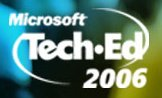
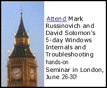

Microsoft TechEd US
June 11-16, 2006
Boston, MA
Preconference Tutorial: Fighting Malware with Advanced Detection and Removal Techniques
Spend the day with master rootkit detective Mark Russinovich, coauthor of Windows Internals (Microsoft Press), learning how to use low level tools such as Autoruns, Process Explorer, and Rootkit Revealer from Sysinternals as well as the Windows kernel debugger, to detect and eliminate malicious software from your Windows systems. Malware continues to evolve new ways of propagating and embedding more deeply into the systems they infect, so understanding how malware operates and manual cleaning techniques are essential skills for all Windows administrators. Topics covered include: Types of malware, Microsoft antimalware tools internals, Investigating unknown processes and threads, Malware entry points, Data Execution Prevention (DEP), Rootkits, Running as limited user, Vista User Account Control. Prerequisite: a working knowledge of Windows system administration tools
Windows Vista Kernel Changes (with Dave Solomon)
This session, presented by the authors of Windows
Internals (Microsoft Press), goes beneath the surface to explore the new
features and enhancements in the Windows Vista operating system kernel to
improve security, scalability, and reliability. Learn about User Account
Control (limited user tokens), Super Fetch, kernel transaction manager,
registry resilience and filtering, prioritzed I/O, service security
improvements, revamped logon architecture, WOW64 enhancements, new hybrid
standby/hibernate, and the many improvements in memory manager scalability
and performance.
Enterprise Malware Solutions Part Two: Cleaning
The last several years have been marked by an acceleration of malware aggressiveness, sophistication, and targeted attacks. Today's IT administrator needs to be prepared to identify, analyze, and remediate malware that slips through laywered defenses since most antimalware solutions depend on signatures of known threats. This session takes you on a tour of malware infection and persistence technologies, including rootkits, and shows you on real malware infections how to use sophisticated tools like Sysinternals.com freeware tools Process Explorer, Autoruns, and RootkitRevealer to clean malware.
Windows Hang and Crash Dump Analysis
Windows Hang and Crash Dump Analysis Live Webcast
Learn to analyze Microsoft Windows crash dumps, diagnose the cause, pinpoint a solution and resolve the problem. This session for all systems administrators explains how crashes occur and what happens when you reboot a crashed system, and then leads you step-by-step through the crash dump analysis process, introducing the latest tools from Microsoft and handy tricks for isolating the cause of a crash.
Advanced Windows Troubleshooting with Sysinternals Filemon and Regmon (with Dave Solomon)
Learn from the author of the free Filemon and Regmon tools from Sysinternals.com advanced techniques to troubleshoot a range of Windows system and application issues (DLL conflicts, permission problems, registry problems, etc). These tools are used on a daily basis by Microsoft Product Support and have been used effectively to solve a wide variety of desktop and server issues, so being familiar with their operation and application will assist you in dealing with different problems on Windows. Real world examples will be given that show successful application of these tools to solve real problems.
Windows Internals and Advanced Troubleshooting
London, June 26-30, 2006
San Francisco, September 18-22, 2006
Austin, TX, December 11-15, 2006
If you like Sysinternals, the book Windows Internals , or want to learn more about Windows NT/2000/XP/2003 internals, including what's coming in Vista, then you'll want to attend the only scheduled seminars where both Dave Solomon and Mark Russinovich, the authors of Windows Internals, deliver our 5-day hands-on (bring your own laptop) Windows Internals and Advanced Troubleshooting seminar. Plus, all registrations include a 1-year free digital subscription to Windows IT Pro Magazine .